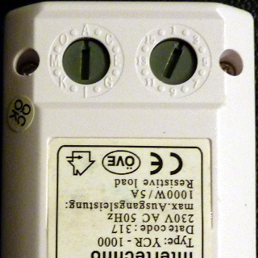
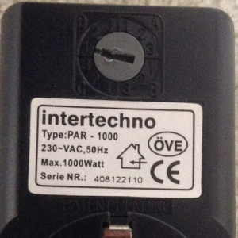
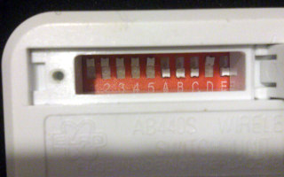
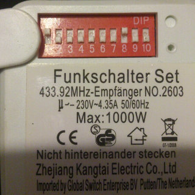
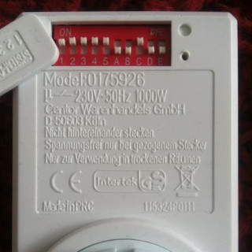
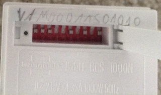

|
|
Conn-Air Mobile WebApp
Haussteuerung per Smartphone und Tablet
|

|
[Wozu das Ganze?] -
[Vorraussetzungen] -
[Screenshots] -
[History] -
[TODO] -
[Konfigurationshilfe] -
[Installationshilfen WebServer] -
[Tipps] -
[Danksagung] -
[Forum] -
[Demo] -
[Spenden] -
[Download]
Hat einer von euch das ITGW-433 Gateway von Intertechno erfolgreich im Einsatz? Es sollte ja funktionieren, aber laut WebSeite von Intertechno gibt es eine eue Version und es wäre ja interessant zu wissen ob sich etwas geändert hat :-)
Wenn ja schreibt mir doch unter [connair (ätt) l3x.de].
letzte UPDATE: 2014-07-13 !!!
Die edit-Funktion kommt noch, aber das ist sehr aufwändig, leider.
Die Conn Air ist eine von Simple-Solutions entwickelte Box die die Brücke
zwischen Netzwerk und Funk (433 Mhz) schlägt. Somit kann man von einem PC, Tablet oder Smartphone die Steckdosen von Intertechno, Brennenstuhl oder Elro schalten.
Leider wird die Connair nicht mehr hergestellt. Aber das Gateway von brennenstuhl Brematic Home Automation Gateway GWY 433 ist 100% kompatibel. Es scheint die Connair im neuen Gewand zu sein ;-)
Da dies eine WebApp ist (Client und Server) benötigst du einen WebServer mit php Unterstützung.
Ich und viele andere Benutzer verwenden den Apache httpd und das php Addon.
Dieser kann auf einer FRITZBox, einem Raspberry PI oder einem normalen PC mit Windows, Linux oder Mac OS X laufen.
Ich werde hier nach und nach Installations-Vorschläge/Anleitungen veröffentlichen, um denen zu Helfen die dies nich jeden Tag tun ;-)
Für Windows könnt ihr z.B. zu XAMPP greifen.
Die App sollte dank jQueryMobile auf jedem HTML5 fähigen Gerät funktionieren.
- eine Conn Air
- Funksteckdosen
- einen Server (das kann sein: FritzBOX, Raspberry PI, NAS, PC, MAC, Apple TV, ...)
- Drang zum Basteln :-)
- Apache WebServer mit php Unterstützung (Installationshilfe gibts weiter unten und im Forum)
Folgende Hardware/Steckdosen besitze ich:

Simple Solutions
Conn-Air

Intertechno
YCR-1000

Intertechno
ITR-1500
Folgende Steckdosen funktionieren auch (erfolgreich getestet von Benutzern):

ELRO
AB440S

Zhejiang Kanhtai
2603

Brennenstuhl
RCS-1000 N Comfort

Intertechno
PAR-1000
Theme: Dunkel

Einstellungen
Theme: Hell
Version 0.6.11 (2014-07-13)
- Device anlegen mit SenderID ein Wunsch von olihamburg :-). Forum-Link
Version 0.6.10 (2014-07-13)
- Jetzt könnt Ihr auch FritzBox DECT 200 schalten.
- Device anlegen mit RAW Code und Hersteller: URL, Computer, FritzBoxDECT200.
Version 0.6.9 (2014-07-06)
- Connair neustarten über Einstellungen (möglich ab Firmware Version 014 Update-Anleitung).
Version 0.6.8 (2014-07-06)
- favicon hinzugefügt.
- Einfachen Texteditor eingebaut um die config.xml manuell via WebApp zu konfigurieren. Dieser erstellt natürlich auch Backups, aber tut dies vor dem nutzen auch nochmal, sicher ist sicher ;-)
Version 0.6.7 (2014-07-06)
- Timer schalten auf Wunsch nur einmal. Siehe Einstellungen. Vorteil: Dimmer funktionieren besser.
Version 0.6.6 (2014-07-05)
- Geräte über URLs Schalten (z.B. Dreamboxen, NetzwerkSchaltDosen, uvm.).
- Redisign der Schaltbuttons.
- Löschen der Geräte, Timer, ...
- Timer de-/aktivieren über Buttons
Version 0.6.5 (2013-04-11)
- Schaltbfehle zu Intertechno Steckdose deutlich verbessert.
- debug.log über die App einsehbar.
- Position über ein Klick herausfinden.
- Versionsnummer in der GUI zusehen.
- Erste Version mit Multi-Connair-Aber-Nur-Eine-Schaltet-Support. Wenn Oli getestet hat gibts mehr Infos.
Version 0.6.4 (2013-04-01)
- Zwei Themes sind verfügbar (Hell und Dunkel). (Danke an oli für die tolle Idee (Ich nutze jetzt Dunkel))
- Timer an- und ausschaltbar. (aktuell nur per XML editieren)
- iPhone 5 (4") Support.
- Weitere interne Code-Optimierungen.
- Neuladen der WebApp nach AllOn oder AllOff um den Status zu aktualisieren.
- Erweiterung der Server-Informationen
- Aktuelle Sonnenauf- und untergangs Uhrzeiten werden beim Anlegen des Timers eingeblendet. (Danke für die Idee an carlsan)
- Nun kann man mit Timern auch NUR aus oder einschalten. (Z.B. als Abschaltvergissmichnichthilfe) (Danke an stromer für die Idee)
- Neue Timer über die WebApp anlegbar.
- Button Config Slider entfernt.
- Versteckte Funktion PCs via WakeOnLAN zustarten bzw. mit "net rcp shutdown" zustoppen. (Bitte stromer :-)
- Buttons können jetzt einen eigenen Text enthalten. (z.B. damit bei Rolladen statt "EIN/AUS" "AB/AUF" steht).
- Alle EIN / Alle AUS im Menu deaktivierbar. (Für mich nicht mehr zu nutzen da es zu viele Geräte sind die anbleiben müssen ;-).
Version 0.6.3 (2013-03-27)
- Debug Möglichkeit bei den Timern verbessert.
- Menu scrollt nicht mehr aus dem Fenster wenn man am Ende einer Liste ist.
- Struktur der Sripte überarbeitet = Performace-Gewinn.
- Fehlermeldung wenn die debug.log nicht geschrieben kann.
Version 0.6.2 (2013-03-24)
- Zeitzone über die config.xml einstellbar.
- Neue Hilfe bei Einstellen vom masterDip und slaveDip bei neuem Device (Brennenstuhl und Elro) anlegen.
- Wieder kompatibel mit php kleiner Version 5.3.x.
- Einstellungs Menü aktiviert. Aber noch nicht alle Funktionen abgedeckt.
- Dialog für neuen Timer anlegen überarbeitet. Man muss keine ID mehr auswendig kennen.
Version 0.6.1 (2013-03-16)
- Offset für Timer bei Sonnenuntergang oder Aufgang möglich. Also die Lampe geht bevor die Sonne unten ist an, so wie es praktisch ist ;-).
Version 0.6.0 (2013-03-16)
- Neues Device anlegen funktioniert nun über die App. (INFO: Es werden noch nicht alle Eingaben geprüft!)
- Geräte und Räume können jetzt anders sortiert werden (siehe Konfigurationshilfe unten).
- Die Buttons in der Geräteübersicht für den Raum schalten sind jetzt Konfigurierbar. Ich will sie nämlich nicht :-) (siehe Konfigurationshilfe unten).
- Bugfix: Timer Off schaltet nun auch bei Gruppen richtig.
- Bugfix: Wenn ein Gerät durch einen Timer geschaltet wurde, wird jetzt der Status dazu gespeichert.
- INFO: Um rawCodes zu nutzen bitte vendor "raw" nutzen.
Version 0.5.1 (2013-03-09)
- Bugfix: Status-Anzeige sollte nun funktionieren.(BUTTON_SLIDER geht noch nicht richtig)
- Bugfix: Seitennamen Links nun ohne Umlaute (nun direkt ansprechbar z.B. #devices für die Geräte).
- Bugfix: Zeitzone ausversehen noch gesetzt. Bitte setzt diese selber in der php.ini
- Bugfix: Elro sollte jetzt auch richtig schalten (habe keine zum Testen :-).
- Übersicht für Timer aufgenommen. Danke an cinos22 für die Inspiration.
Version 0.5.0 (2013-02-27)
- Option showMenuOnLoad eingefügt (öffnet das Menu nach dem Starten der App automatisch).
- Für die User mit einem Intertechno Gateway könnt ihr jetzt den Hack von elduffy aktivieren (siehe Config). Danke dir. Besser ist natürlich eine Connair zu nutzen ;-)
- Zeitsteuerung von cinos22 etwas modifiziert eingebaut. Dafür noch mal danke.
- Schwellwerte für das Swipen angepasst.
Version 0.4.1 (2013-02-16)
- Fehler beim "Menu swipen" gefunden. Funktioniert nun immer.
Version 0.4 (2013-02-16)
- debug Schalter hinzugefügt
- rudimentäre unterstützung des CUL USB Sticks. (Wiki vom Hersteller)
- Auf Wunsch von "cinos22" Support für POST und GET Requests aufgenommen.
Danke für die Idee. Nun Könnt Ihr auch mit einem Aufruf einer URL schalten.
Mehr dazu unten unter Tipps.
- Neue Option für die Statusanzeige: BUTTON_SLIDER
Version 0.3 (2013-02-11)
- GUI (Graphical User Interface) Einstellungen
- Status Anzeige des Schaltzustandes (nur sinnvoll wenn ausschließlich über die App geschaltet wird)
Version 0.2 (2013-02-08)
- Übersicht für Räume hinzugefügt
- Räume können auch in der Geräte Übersicht geschaltet werden
- In Gruppen ist es nun möglich Geräte beim Einschalten einer Gruppe auszuschalten
- jQueryMobile Lib update
Version 0.1.1 (2013-02-06)
- TXP Code wurde nicht sauber erzeugt
- config.xml mit sinnvollen Beispielen bestückt
Version 0.1 (2013-02-03)
- Menu per wischen
- schneller schalten mit Favoriten
- Übersicht über alle Geräte
- Übersicht über die Gruppen
- direktes Schalten aller Geräte über das Menü
- senden des Befehls an mehrere Conn-Air gleichzeitig
- Konfigurieren mit Master und Slave Code
- Konfigurieren eines RAW Codes
- Konfigurieren über die App
- Erweitertes Fehlerhandling
- Fotozuweisung zu Geräten
- Zugriffsberechtigen
- Schaltimpuls also wie ein Taster
- PCs via WOL (Wake On Lan) schalten
- Geräte die nach einer Zeit t automatisch wieder ausgehen
- Umstellung auf only AJAX
- Sourcecode säubern
- Geräte/Gruppen/Timer via GUI anlegen/editieren/löschen
- Navigation vom Raum aus zum Gerät
- ...
- Wünsche?
Debugging
Ihr könnt bei Problemen den DebugModus aktivieren und in das dann erstellte debug.log schauen was so passiert.
- debug mögliche Optionen sind: true (an) oder false (aus).
<config debug="true">
...
</config>
Globale Einstellungen
Hier werden die globalen Einstellungen von der WebApp vorgenommen.
- timezone eure Zeitzone. Default: Wer aus der php.ini und wenn da nicht gesetzt dann UTC Dies ist optional da immer wieder Probleme mit der Zeitzone über die php.ini aufgetreten sind.
- longitude euer Längengrad. Default: 9.44858
- latitude euer Breitengrad. Default: 48.64727 - Dies dient zur Ermittlung des Sonnenauf und -unterganges bei Euch. Um die Daten zu ermitteln, nutzt am besten Google Maps.
<global>
<timezone>Europe/Berlin</timezone>
<longitude>9.44858</longitude>
<latitude>48.64727</latitude>
</global>
GUI (Graphical User Interface) Einstellungen
Hier kann die funktion der Oberfläche eingestellt werden. Es werden in Zukunft immer mehr Funktionen einstellbar sein.
- showDeviceStatus mögliche Optionen sind: ROW_COLOR, BUTTON_COLOR, BUTTON_ICON, OFF (Alles andere wird als OFF gewertet).
- showRoomButtonInDevices mögliche Optionen sind: true oder false (Alles andere wird als false gewertet).
- showMenuOnLoad öffnet das Menu nach dem Starten der App automatisch.
- sortOrderDevices steuert die Sortierung der Geräte. Mögliche Optionen sind: SORT_BY_NAME, SORT_BY_ID (Bei leer lassen oder anderen Werten ist die Reihenfolge wie in der config.xml)
- sortOrderGroups steuert die Sortierung der Gruppen. Mögliche Optionen sind: SORT_BY_NAME, SORT_BY_ID (Bei leer lassen oder anderen Werten ist die Reihenfolge wie in der config.xml)
- sortOrderRooms steuert die Sortierung der Räume. Mögliche Optionen sind: SORT_BY_NAME (Bei leer lassen oder anderen Werten ist die Reihenfolge wie in der config.xml)
- sortOrderTimers steuert die Sortierung der Timer. Mögliche Optionen sind: SORT_BY_NAME, SORT_BY_ID, SORT_BY_TYPE_AND_NAME (Bei leer lassen oder anderen Werten ist die Reihenfolge wie in der config.xml)
- theme Das design des WebApp es gibt DARK und LIGHT
<gui>
<showDeviceStatus>OFF</showDeviceStatus>
<showRoomButtonInDevices>false</showRoomButtonInDevices>
<showMenuOnLoad>true</showMenuOnLoad>
<sortOrderDevices>SORT_BY_NAME</sortOrderDevices>
<sortOrderGroups>SORT_BY_NAME</sortOrderGroups>
<sortOrderRooms>SORT_BY_NAME</sortOrderRooms>
<sortOrderTimers>SORT_BY_TYPE_AND_NAME</sortOrderTimers>
<theme>LIGHT</theme>
</gui>
Die Conn-Airs
Der einfachste Part ist der für die Conn-Air[s], einfach mehrere untereinander siehe Beispiel.
INFO: Du brauchst nur soviele connair Blöcke wie du auch Conn-Airs besitzt. Im Beispiel unten sind zwei Stück drin. Wenn du nur eine Conn-Air hast dann schmeiß eine in deiner config.xml raus.
- type ist optional. Aktuell ist nur itgw möglich. Du benötigst das nur wenn du ein Intertechno Gateway hast, wenn du eine Conn-Air von Simple Solutions hast ignorier das einfach.
- address hier muss nur der Hostname oder IP der Conn-Air rein.
- port ist des Conn-Air.
<connairs>
<connair>
<address>192.168.42.3</address>
<port>49880</port>
</connair>
<connair type="itgw">
<address>192.168.42.4</address>
<port>49880</port>
</connair>
</connairs>
Die CULs
Hier könnt ihr eure CULs bekanntmachen. NUR Linux supported.
INFO: Hast du überhaupt eine CUL? Wenn nicht kann der ganze Block culs aus deiner config.xml raus. Du weißt nicht ob du eine CUL hast? So sieht eine CUL aus --> Wiki vom Hersteller
- device hier muss das Linux Device von der CUL rein. Damit man aus dem php Script mit dem USB Stick sprechen darf muss der User für den Apache in der Gruppe sein die schreibrechte hat. Unter Tipps sehr ihr wie es bei gentoo ist.
<culs>
<cul>
<device>/dev/ttyACM0</device>
</cul>
<cul>
<device>/dev/ttyACM1</device>
</cul>
</culs>
Die Geräte
- id ist eine fortlaufende Nummer.
- name ist der Name des Gerätes welcher auch in der Oberfläche sichtbar ist.
- vendor ist der Hersteller des Geräte. Aktuell möglich intertechno, elro oder brennenstuhl. Besondere typen sind computer und url.
- address ist die Adresse des Gerätes, diese ist Hersteller abhängig.
- masterdip bei Intertechno z.B. A.
- slavedip bei Intertechno z.B. 2.
- tx433version Version des Protokolls. Bei Intertechno immer 1.
- rawCodeOn der komplette TXP Datensatz der an die Conn-Air geschickt werden soll um das Gerät einzuschalten. Du benötigste diesen nur wenn dein Gerät aktuell nicht direkt mit masterdip und slavedip unterstützt wird. Wenn du einen rawCode setzt wird masterdip, slavedip und tx433version ignoriert.
- rawCodeOff der komplette TXP Datensatz der an die Conn-Air geschickt werden soll um das Gerät auszuschalten. Du benötigste diesen nur wenn dein Gerät aktuell nicht direkt mit masterdip und slavedip unterstützt wird. Wenn du einen rawCode setzt wird masterdip, slavedip und tx433version ignoriert.
- room sortiert das Gerät in einen Raum.
- favorite macht das Gerät in der Favoriten übersicht sichtbar
- buttonLabelOn ist die Beschriftung des EIN Button. (ist optional wenn du es weglässt steht da EIN)
- buttonLabelOff ist die Beschriftung des AUS Button. (ist optional wenn du es weglässt steht da AUS)
<devices>
<device buttonLabelOn="AB" buttonLabelOff="AUF">
<id>1</id>
<name>Lichterkette Wohnzimmertür</name>
<vendor>Intertechno</vendor>
<address>
<masterdip>M</masterdip>
<slavedip>2</slavedip>
<tx433version>1</tx433version>
<rawCodeOn></rawCodeOn>
<rawCodeOff></rawCodeOff>
</address>
<room>Flur</room>
<favorite>false</favorite>
</device>
</devices>
Die Gruppen
- id ist eine fortlaufende Nummer.
- name ist der Name des Gerätes welcher auch in der Oberfläche sichtbar ist.
- favorite macht das Gerät in der Favoriten übersicht sichtbar.
- deviceid ist eine Liste mit Geräten die zu dieser Gruppe gehören.
- onaction Was soll passieren wenn man die Gruppe einschaltet? Gerät einschalten, ausschalten oder dieses Gerät ignorieren? Mögliche Werte on,off,none.
- offaction Was soll passieren wenn man die Gruppe ausschaltet? Gerät einschalten, ausschalten oder dieses Gerät ignorieren? Mögliche Werte on,off,none.
- buttonLabelOn ist die Beschriftung des EIN Button. (ist optional wenn du es weglässt steht da EIN)
- buttonLabelOff ist die Beschriftung des AUS Button. (ist optional wenn du es weglässt steht da AUS)
<groups>
<group buttonLabelOn="AB" buttonLabelOff="AUF">
<id>2</id>
<name>gemütlicher Abend</name>
<favorite>true</favorite>
<deviceid onaction="on" offaction="off">1</deviceid>
<deviceid onaction="off" offaction="none">3</deviceid>
</group>
</groups>
Die Timer
Aktuell werden die Timer via Cronjob angestartet. Details dazu unter Tipps.
- debug mögliche Optionen sind: true (an) oder false (aus). Erzeug ausgaben beim Aufruf der "timerrun"-URL.
- id ist eine fortlaufende Nummer.
- active ist der Timer aktiv dann schaltet er auch. Ihr könnt ihn z.B. im Urlaub ausstellen. (on oder off)
- type Was soll geschaltet werden? (device, group, room).
- typeid Die id der zuschaltenden Objekts (Beim Raum der Raumname).
- day An welchen Tagen soll der Timer ausgeführt werden.
Dieses Feld besteht aus 7 Zeichen. Das erste ist Montag das zweite Dienstag bis das siebte Sonntag.
Beispiele:
nur Montag = <day>M______</day>
Montag und Mittwoch = <day>M_M____</day>
Samstag und Sonntag = <day>_____SS</day>
jeden Wochentag = <day>MDMDFSS</day>
- timerOn Start Uhrzeit im Format hh:mm (z.B. 13:37) oder SU für Sonnenaufgang bzw. SD für Sonnenuntergang.
- offset falls die Lampe vor dem Sonnenuntergang schon angehen soll, könnt ihr mit offset eine Zeit in Minuten angeben. Z.B. "-30" für dreißig Minuten eher. (Funktioniert nur bei SU und SD)
- timerOff Stop Uhrzeit im Format hh:mm (z.B. 23:23) oder SU für Sonnenaufgang bzw. SD für Sonnenuntergang.
- offset falls die Lampe nach dem Sonnenaufgang erst angehen soll, könnt ihr mit offset eine Zeit in Minuten angeben. Z.B. "60" für sechzig Minuten nach dem Aufgang. (Funktioniert nur bei SU und SD)
<timers debug="true">
<timer>
<id>1</id>
<active>on</active>
<type>device</type>
<typeid>1</typeid>
<day>M______</day>
<timerOn>SD</timerOn>
<timerOff>23:59</timerOff>
</timer>
<timer>
<id>2</id>
<active>off</active>
<type>group</type>
<typeid>2</typeid>
<day>_____SS</day>
<timerOn offset="-30">SD</timerOn>
<timerOff>00:30</timerOff>
</timer>
<timer>
<id>3</id>
<active>on</active>
<type>room</type>
<typeid>Flur</typeid>
<day>MDMDFSS</day>
<timerOn>19:00</timerOn>
<timerOff>23:00</timerOff>
</timer>
</timers>
Wie bekomme ich den richigen masterdip und slavedip heraus?
Ganz einfach :-)
Intertechno YCR-1000 und YCR-3500
Der Buchstabe ist der masterdip und die Zahl ist der slavedip.

<devices>
<device>
<id>1</id>
<name>Steckdose</name>
<vendor>Intertechno</vendor>
<address>
<masterdip>A</masterdip>
<slavedip>2</slavedip>
</address>
<room>Raum</room>
<favorite>false</favorite>
</device>
</devices>
Intertechno PAR-1000
Der Buchstabe ist der masterdip und die Zahl 1 bis 3 ist der slavedip.

<devices>
<device>
<id>1</id>
<name>Steckdose</name>
<vendor>Intertechno</vendor>
<address>
<masterdip>D</masterdip>
<slavedip>1</slavedip>
</address>
<room>Raum</room>
<favorite>false</favorite>
</device>
</devices>
ELRO AB440S
Die Schalter 1 bis 5 sind der masterdip und die Schalter A bis E sind der slavedip.

<devices>
<device>
<id>1</id>
<name>Steckdose</name>
<vendor>ELRO</vendor>
<address>
<masterdip>11111</masterdip>
<slavedip>00010</slavedip>
</address>
<room>Raum</room>
<favorite>false</favorite>
</device>
</devices>
Zhejiang Kanhtai 2603
Die Schalter 1 bis 5 sind der masterdip und die Schalter 6 bis 10 sind der slavedip.

<devices>
<device>
<id>1</id>
<name>Steckdose</name>
<vendor>ELRO</vendor>
<address>
<masterdip>10000</masterdip>
<slavedip>00100</slavedip>
</address>
<room>Raum</room>
<favorite>false</favorite>
</device>
</devices>
Intertek 0175926
Die Schalter 1 bis 5 sind der masterdip und die Schalter A bis E sind der slavedip.

<devices>
<device>
<id>1</id>
<name>Steckdose</name>
<vendor>Elro</vendor>
<address>
<masterdip>11111</masterdip>
<slavedip>00100</slavedip>
</address>
<room>Raum</room>
<favorite>false</favorite>
</device>
</devices>
Brennenstuhl RCS-1000 N Comfort
Die Schalter 1 bis 5 sind der masterdip und die Schalter A bis E sind der slavedip.

<devices>
<device>
<id>1</id>
<name>Steckdose</name>
<vendor>Brennenstuhl</vendor>
<address>
<masterdip>00011</masterdip>
<slavedip>01010</slavedip>
<tx433version>2</tx433version>
</address>
<room>Raum</room>
<favorite>false</favorite>
</device>
</devices>
FRITZBox 7390
Das habe ich gemacht ... Danke an
http://www.fritzmod.net/
Als erstes muss man den Telnet Server starten. Dazu am Telefon das an die Fritzbox angeschlossen ist folgendes wählen:
#96*7* Telnet an
#96*8* Telnet aus
Dann mittels Putty oder Terminal auf die Fritzbox mit "telnet fritz.box" verbinden.
Wen das klappt folgende Schritte abarbeiten (es müssen nur die Zeilen ohne # ausgeführt werden :-)
# Verzeichnis erstellen in dem wir apache ablegen
mkdir /var/media/ftp/server
# in das neue Verzeichnis wechseln
cd /var/media/ftp/server
# apache und php vo fritzmod laden
wget http://www.fritzmod.net/download/mips/apache-2.2.17_php-5.4.3_mips_static.tar
# das geladene Paket auspacken
tar xvf apache-2.2.17_php-5.4.3_mips_static.tar
# Testen ob der apache funktioniert
./apache_bin -l
# Compiled in modules:
# core.c
# mod_authn_file.c
# ...
# Standard-Konfiguration erstellen
./set_apache_config 85
# anpassen der config des apache an unsere gegebenheiten
sed -i 's/Hitachi-HTS543216L9A300-01/server/g' apache/conf/apache.conf
# den richtigen Usernamen rausfinden .. bei mir boxuser99
cat /etc/passwd | grep boxusr | grep -v int
# boxusr99
# boxusr100
# anpassen der config des apache an unsere gegebenheiten
sed -i 's/^User .*/User boxusr99/g' apache/conf/apache.conf
# apache testen
./apache_bin -f /var/media/ftp/server/apache/conf/apache.conf
# jawohl der apache läuft
ps | grep apache
# 2756 root 2456 S ./apache_bin -f /var/media/ftp/server/apache/conf/ap
# 2757 boxusr99 2480 S ./apache_bin -f /var/media/ftp/server/apache/conf/ap
# 2758 boxusr99 2480 S ./apache_bin -f /var/media/ftp/server/apache/conf/ap
# 2765 root 1236 S grep apache
# apache wieder stoppen
killall apache_bin
# ja er ist weg
ps | grep apache
# 2926 root 1236 S grep apache
# start befehl in die debug.cfg übernehmen damit der apache beim Neustart der FritzBOX auch startet
echo "/var/media/ftp/server/apache_bin -f /var/media/ftp/server/apache/conf/apache.conf" > /var/media/ftp/server/debug.cfg
# Jetzt die Busybox, dazu wieder in das server Verzeichnis
cd /var/media/ftp/server/
# die neue Busybox laden
wget http://www.fritzmod.net/download/mips/busybox_1.20.2_mips
# Umbenennen damit es besser lesbar ist
mv busybox_1.20.2_mips busybox
# busybox ausführbar machen
chmod +x busybox
# Verzeichnis für die CronJobs erstellen
mkdir -p /var/media/ftp/server/cron
# Cronjob für root anlegen
echo "*/5 * * * * wget -q http://fritz.box:85/connair/index.php?timerrun=1 -O /dev/null >> /dev/null 2>>/dev/null" > /var/media/ftp/server/cron/root
# crond starten
/var/media/ftp/server/busybox crond -c /var/media/ftp/server/cron &
# start befehl in die debug.cfg übernehmen damit der crond beim Neustart der FritzBOX auch startet
echo "/var/media/ftp/server/busybox crond -c /var/media/ftp/server/cron &" >> /var/media/ftp/server/debug.cfg
# Jetzt beides scharfschalten damit es auch einen Reboot überlebt, dazu wieder in das server Verzeichnis
cd /var/media/ftp/server/
# unsere debug.cfg aktivieren
cat debug.cfg > /var/flash/debug.cfg
# zur kontrolle gucken wir ob die debug.cfg im Speicher richtig ist
cat /var/flash/debug.cfg
#/var/media/ftp/server/apache_bin -f /var/media/ftp/server/apache/conf/apache.conf
#/var/media/ftp/server/busybox crond -c /var/media/ftp/server/cron &
# Optional und sollte auch gut überlegt sein. Bitte Zugriff mit Passwort schützen, Beispiele dazu unter Tipps.
# jetzt noch der Zugriff von Außen, dazu die Datei ar7.cfg editieren und eine folgende Zeile hinzufügen (unbedingt nvi nutzen!)
# mit / gann man suchen, mit i starten man das hinzufügen, mit ESC beendet man es und mit :x beendet man den editor und speichert die datei ab.
nvi /var/flash/ar7.cfg
# forwardrules =
# "tcp 0.0.0.0:80 0.0.0.0:85 0 # apache",
# ...
# FritzBox neustarten
reboot
FRITZBox 7570 7170 7270 7240
Danke an
http://www.fritzmod.net/
Ich selber habe keine dieser Fritz.Box'en aber ich konnte es mit einem WebApp Nutzer durchspielen. Dafür danke.
Als erstes muss man den Telnet Server starten. Dazu am Telefon das an die Fritzbox angeschlossen ist folgendes wählen:
#96*7* Telnet an
#96*8* Telnet aus
Dann mittels Putty oder Terminal auf die Fritzbox mit "telnet fritz.box" verbinden.
Wen das klappt folgende Schritte abarbeiten (es müssen nur die Zeilen ohne # ausgeführt werden :-)
# USB Stick ermitteln
ls /var/media/ftp
# In den folgenden Befehlen müsst ihr USBSTICK durch den Namen eures Sticks ersetzen
# Verzeichnis erstellen in dem wir apache ablegen
mkdir /var/media/ftp/USBSTICK/server
# in das neue Verzeichnis wechseln
cd /var/media/ftp/USBSTICK/server
# apache und php vo fritzmod laden
wget http://www.fritzmod.net/download/mipsel/apache-1.3.41-modssl_php-5.4.3_sqlite-2.1.tar
# das geladene Paket auspacken
tar xvf apache-1.3.41-modssl_php-5.4.3_sqlite-2.1.tar
# das Verzeichnis umbenennen
mv apache-1.3.41-modssl_php-5.4.3_sqlite-2.1 apache
# in den apache Ordner wechseln
cd apache
# Testen ob der apache funktioniert
./bin/apache -l
# Compiled in modules:
# core.c
# mod_authn_file.c
# ...
# anpassen der config des apache an unsere gegebenheiten
sed -i 's;Hitachi-HTS543216L9A300-01;USBSTICK/server;g' conf/apache.conf
# den richtigen Usernamen rausfinden .. bei mir boxuser99
cat /etc/passwd | grep boxusr | grep -v int
# boxusr80
# anpassen der config des apache an unsere gegebenheiten
sed -i 's/^User .*/User boxusr80/g' conf/apache.conf
# apache testen
./bin/apache -f /var/media/ftp/USBSTICK/server/apache/conf/apache.conf
# jawohl der apache läuft
ps | grep apache
# 2756 root 2456 S ./apache_bin -f /var/media/ftp/server/apache/conf/ap
# 2757 boxusr99 2480 S ./apache_bin -f /var/media/ftp/server/apache/conf/ap
# 2758 boxusr99 2480 S ./apache_bin -f /var/media/ftp/server/apache/conf/ap
# 2765 root 1236 S grep apache
# apache wieder stoppen
killall apache
# ja er ist weg
ps | grep apache
# 2926 root 1236 S grep apache
# start befehl in die debug.cfg übernehmen damit der apache beim Neustart der FritzBOX auch startet
echo "/var/media/ftp/USBSTICK/server/apache/bin/apache -f /var/media/ftp/USBSTICK/server/apache/conf/apache.conf" > /var/media/ftp/USBSTICK/server/debug.cfg
# Jetzt die Busybox, dazu wieder in das server Verzeichnis
cd /var/media/ftp/USBSTICK/server/
# die neue Busybox laden
wget http://www.fritzmod.net/download/mipsel/busybox_1.20.2_mipsel
# Umbenennen damit es besser lesbar ist
mv busybox_1.20.2_mipsel busybox
# busybox ausführbar machen
chmod +x busybox
# Verzeichnis für die CronJobs erstellen
mkdir -p /var/media/ftp/USBSTICK/server/cron
# Cronjob für root anlegen
echo "*/5 * * * * wget -q http://fritz.box:85/connair/index.php?timerrun=1 -O /dev/null >> /dev/null 2>>/dev/null" > /var/media/ftp/USBSTICK/server/cron/root
# crond starten
/var/media/ftp/USBSTICK/server/busybox crond -c /var/media/ftp/USBSTICK/server/cron &
# start befehl in die debug.cfg übernehmen damit der crond beim Neustart der FritzBOX auch startet
echo "/var/media/ftp/USBSTICK/server/busybox crond -c /var/media/ftp/USBSTICK/server/cron &" >> /var/media/ftp/USBSTICK/server/debug.cfg
# Jetzt beides scharfschalten damit es auch einen Reboot überlebt, dazu wieder in das server Verzeichnis
cd /var/media/ftp/USBSTICK/server/
# unsere debug.cfg aktivieren
cat /var/media/ftp/USBSTICK/server/debug.cfg > /var/flash/debug.cfg
# zur kontrolle gucken wir ob die debug.cfg im Speicher richtig ist
cat /var/flash/debug.cfg
#/var/media/ftp/USBSTICK/server/apache/bin/apache -f /var/media/ftp/USBSTICK/server/apache/conf/apache.conf
#/var/media/ftp/USBSTICK/server/busybox crond -c /var/media/ftp/USBSTICK/server/cron &
# Optional und sollte auch gut überlegt sein. Bitte Zugriff mit Passwort schützen, Beispiele dazu unter Tipps.
# jetzt noch der Zugriff von Außen, dazu die Datei ar7.cfg editieren und eine folgende Zeile hinzufügen (unbedingt nvi nutzen!)
# mit / gann man suchen, mit i starten man das hinzufügen, mit ESC beendet man es und mit :x beendet man den editor und speichert die datei ab.
nvi /var/flash/ar7.cfg
# forwardrules =
# "tcp 0.0.0.0:80 0.0.0.0:85 0 # apache",
# ...
# FritzBox neustarten
reboot
Apple TV 2 (ATV2)
Danke an Jürgen und plato für diese schöne Anleitung! (Ich habe sie etwas aufgebohrt :)
Hier das genutzte Repository:
ios-webstack -
cydia-ios-lighttpd-php-mysql-web-stack
Was man so braucht:
1. Apple TV 2te Generation
2. Jailbreak z.B. Seas0nPass
3. iOS WebStack
echo 'deb http://ios-webstack.tk/cydia/ ./' > /etc/apt/sources.list.d/ios-webstack.list
4. Alle Pakete erstmal aktualisieren:
apt-get update
apt-get upgrade
5. Jetzt den "cydia-ios-lighttpd-mysql-web-stack" installieren:
apt-get install atv-lighttpd-php-mysql
6. Damit die WebApp mit der Connair sprechen kann muss die sockets Erweiterung an sein. Einfach in die Datei /etc/php.d/load_all.ini folgende Zeile hinzugefügen:
7. com.connair.timer.plist
eine kleine Anleitung für den 5 Minuten ConnAir Timer.
Falls noch nicht vorhanden, muss 'wget' installiert werden:
Dann die Datei
com.connair.timer.plist in das Verzeichnis /Library/LaunchDaemons/ kopieren.
Die Datei ist mit einem Cronjob zu vergleichen. Der Service ruft alle 300 Sekunden die ConnAir Timer Seite vom lokalem Server auf.
Jetzt muss Launchd nur noch gesagt werden, dass die Datei auch zu verarbeiten ist.
Service starten mit folgendem Befehl:
Ggf. müsst ihr das localhost in der plist durch eure IPAdresse ersetzen.
launchctl load /Library/LaunchDaemons/com.connair.timer.plist
Service stoppen mit folgendem Befehl (z.B. wenn du die plist geändert hast):
launchctl unload /Library/LaunchDaemons/com.connair.timer.plist
Wenn der Service einmal gestartet ist, überlebt er auch einen neustart.
Du kannst in der Lighttpd-Log-Datei sehen, ob da jetzt alle 5 Minuten etwas aufgerufen wird:
Die Log-Datei findest Du hier:
/var/log/lighttpd/lighttpd.log
Wenn alles geklappt hat, ist zu überlegen ob du evtl. das Lighttpd Logging unterbindest.
Nur die ConnAir Timereinträge alle 5 Minuten, ergeben ca. 12 MByte an Log-Datei pro Jahr.
Falls Du dieses unterdrücken möchtest, folgende Zeilen in /etc/lighttpd/lighttpd-atv.conf anpassen:
server.modules = (
"mod_access",
# "mod_accesslog", #no logging
"mod_fastcgi",
"mod_cgi",
"mod_compress",
"mod_evasive",
"mod_rewrite" #for example TYPO3 need this
)
Den Web-Server neustarten:
Fertig !!!
Mac OS X
Mac OS X Mountain Lion
Danke an Jürgen und plato für diese schöne Anleitung!! (Ich habe sie etwas aufgebohrt :)
Der Webserver kann mit diesem Tool aktiviert werden:
Web Sharing.prefPane (Google Suche benutzen)
Die Web-Seiten werden im Ordner /Library/WebServer/Documents abgelegt.
Testaufruf mit http://localhost/
Das Tool zeigt auch an, ob PHP aktiviert ist. PHP ist ebenfalls Bestandteil von Mac OS X 10.8, allerdings serienmäßig nicht eingeschaltet.
Ob PHP eingeschaltet ist kann auch mit diesem Aufruf getestet werden http://localhost/info.php
Folgende Datei muss editiert werden:
HD:private/etc/apache2/httpd.conf
Finder Gehe zu: etc/apache2/httpd.conf
Diesen Teil suchen, ist aus kommentiert
# LoadModule php5_module libexec/apache2/libphp5.so
und muss so aktiviert werden:
LoadModule php5_module libexec/apache2/libphp5.so
Nun der Timer:
Dann die Datei
com.connair.timer.plist in das Verzeichnis /Library/LaunchDaemons/ kopieren.
Die Datei ist mit einem Cronjob zu vergleichen. Der Service ruft alle 300 Sekunden die ConnAir Timer Seite vom lokalem Server auf.
Jetzt muss Launchd nur noch gesagt werden, dass die Datei auch zu verarbeiten ist.
Ggf. müsst ihr das localhost in der plist durch eure IPAdresse ersetzen.
Service starten mit folgendem Befehl:
launchctl load /Library/LaunchDaemons/com.connair.timer.plist
Service stoppen mit folgendem Befehl (z.B. wenn du die plist geändert hast):
launchctl unload /Library/LaunchDaemons/com.connair.timer.plist
Wenn der Service einmal gestartet ist, überlebt er auch einen neustart.
Fertig
Ubuntu
Kommt noch
Windows XAMPP
Vielen Dank an Michael
Xampp bei
www.apachefriends.org downloaden und installieren:
http://www.apachefriends.org/download.php?xampp-win32-1.8.1-VC9-installer.exe
In der
FAQ von apachefriends.org gibt es auch Hilfe wenn es mal nicht so klappt :-)
Mobile WebApp konfigurieren und in das Verzeichnis htdocs ablegen (C:\xampp\htdocs)
Xampp über xampp-control.exe starten
Apache starten
Zugriff auf die WebApp ist nun aus dem lokalen Netzwerk über die IP-Adresse oder das DNS Alias des Rechners möglich.
Für den Zugriff über das Internet muss eine Portfreigabe (Standardport 80) über den Router eingerichtet werden.
Soll ein abweichender Port verwendet werden, kann dieser in der Konfiguration von Apache (C:\xampp\apache\conf\httpd.conf) eingestellt werden. Dazu den Default-Port 80 auf den gewünschten Port umstellen.:
#
# Listen: Allows you to bind Apache to specific IP addresses and/or
# ports, instead of the default. See also the
# directive.
#
# Change this to Listen on specific IP addresses as shown below to
# prevent Apache from glomming onto all bound IP addresses.
#
#Listen 0.0.0.0:80
#Listen [::]:80
Listen 80
Du hast eine selbst lernenden Funksteckdosen von Intertechno ITR-1500 und kennst den Code nicht?
Einfach ein Device, wie oben beschrieben, anlegen mit z.B. masterdip B und slavedip 1 (kannst auch gerne andere Kombinationen nehmen) und dann die Steckdose in den Lernmodus versetzen (in eine Steckdose stecken) und innerhalb von 5 Sekunden das neu angelegte Device über die WebApp einschalten.. dann hat die Dose auch diesen Code gelernt (maximal 3 Codes möglich) und ist über die Fernbedienung und WebbApp (Conn-Air) erreichbar ..
Du mehrere Connairs und willst diese nutzen?
Du musst diese dann in der config.xml eintragen und jeder Connair eine eigene ID zuweisen
Connairs:
<connairs>
<connair>
<id>1</id>
<address>192.168.42.3</address>
<port>49880</port>
</connair>
<connair>
<id>2</id>
<address>192.168.42.4</address>
<port>49880</port>
</connair>
</connairs>
<devices>
<device>
<id>1</id>
<senderid>1</senderid>
<name>Lampe Sideboard</name>
<vendor>intertechno</vendor>
<address>
<masterdip>C</masterdip>
<slavedip>1</slavedip>
<tx433version>1</tx433version>
</address>
<room>Wohnzimmer</room>
<favorite>true</favorite>
<status>OFF</status>
</device>
<device>
<id>2</id>
<senderid>2</senderid>
<name>Lampe Bett</name>
<vendor>intertechno</vendor>
<address>
<masterdip>C</masterdip>
<slavedip>2</slavedip>
<tx433version>1</tx433version>
</address>
<room>Schlafzimmer</room>
<favorite>true</favorite>
<status>OFF</status>
</device>
</devices>
Das ganze ist leider noch nicht in der Webapp verdrahtet, da musst du aktuell noch selber hand anlegen. Im Standard werden alle Geräte mit alles Connairs angesprochen.
Du möchtest auch ohne die schöne Oberfläche schalten?
Z.B. könnt ihr via crontab oder script schalten (die id ist durch einen gültigen Wert aus der config.xml zu ersetzen):
Geräte:
curl "http://sun/connair/index.php?action=on&type=device&id=1"
curl "http://sun/connair/index.php?action=off&type=device&id=1"
curl "http://sun/connair/index.php?action=on&type=group&id=1"
curl "http://sun/connair/index.php?action=off&type=group&id=1"
curl "http://sun/connair/index.php?action=on&type=room&id=flur"
curl "http://sun/connair/index.php?action=off&type=room&id=flur"
curl "http://sun/connair/index.php?action=allon"
curl "http://sun/connair/index.php?action=alloff"
Timer schaltet zur falschen Uhrzeit?
Bist du dir sicher das du die richtige Zeitzone in der php.ini eingestellt hast?
Bei mir lieg die php.ini im Ordner /etc/php/apache2-php5.4/php.ini
[Date]
; Defines the default timezone used by the date functions
; http://php.net/date.timezone
date.timezone = "Europe/Berlin"
date.default_latitude = 48.64727
date.default_longitude = 9.44858
Achtung: Richtige Rechte für Apache bei der Verwendung eines CULs
Welche Rechte hat das Device?
sun ~ # ls -lha /dev/ttyACM0
crw-rw---- 1 root uucp 166, 0 16. Feb 22:33 /dev/ttyACM0
Gruppe dem User Apache zuordnen. In meinem Fall die Gruppe "uucp" (Geht natürlich auch händisch über die /etc/groups)
sun ~ # groupmems -g uucp -a apache
Du möchtest den Zugriff mit einem Passwort schützen?
Wenn du einen Apache Webserver verwendest kann ich dir da das Thema .htaccess
ans Herz legen. Habe ich selbst auch im Einsatz um Zugriffe von außen zu schützen.
Zugriffe aus dem Netz zu Hause sind dagegen ohne läßtiges Passwort möglich.
AuthType Basic
AuthName "Conn-Air Mobile WebApp"
AuthUserFile /etc/apache2/htpasswd.users
Require valid-user
Order deny,allow
Deny from all
Allow from 192.168
Satisfy any
Bei SelfHTML gibt es auch einen guten Artikel dazu: .htaccess - Server-Reaktionen kontrollieren
Einrichten des Crontab-Timers
Um die Timersteuerung zu aktivieren, müsst Ihr noch einen Cronjob / Trigger alle 5 Minuten mit folgenden Link erstellen:
http://LinkZurSeite/index.php?timerrun=1
Unter Linux wir meist dazu der Befehl crontab -e benutzt. Jenach dem ob euch wget oder curl zur Verfügung steht hier zwei Beispiele.
*/5 * * * * curl -s -S http://localhost/connair/index.php?timerrun=1 >> /dev/null
*/5 * * * * wget -q http://localhost/connair/index.php?timerrun=1 -O /dev/null >> /dev/null
INFO: Die aktuelle Umsetzung verlangt das der Aufruf im 5 Minutentakt ist und nicht jede oder alle zwei Minuten.
Wie kann ich die WebApp debuggen?
Zum einen gibt es den oben beschriebenen debug=true Schalter in der config.xml, zum anderen kann man
aber auch eine zweite connair einrichten und mit der IP Adresse des eigenen Rechners versehen. Dann kommen die
Befehle auch am PC an und werden in der Console ausgegeben. Hierzu werwendet man netcat.
INFO: Leider muss nach jedem Empfangen der netcat Befehl erneut gestartet werden :-(
Besser gehts noch mit tcpdump ...
sudo tcpdump -v -q -A -n -i wlan0 udp port 49880
Danke an morsix, perrpf, muckel, manu, vorband, schmiedel, qualidat, olliberlin, ollihamburg, tecxmecx, cyberdev, cinos22, elduffy, static77, carlsan, stromer und den anderen aus dem Forum für die Pionierarbeit und Unterstützung
Forum-Thread:Steuern per Rechner ...
Forum-Thread:Conn-Air Mobile WebApp (iPhone, iPad, Android, PC, ...)
Das PowerSwitch Team hat ein Forum aufgesetzt und ich habe ein Stück abbekommen. Vielen Dank Jungs.
zum WebApp Forum
Demo starten
Die WebApp ist und bleibt kostenlos für private Anwender.
Diese Spende ist freiwillig und man erwirbt dadurch kein
Recht auf Support oder Garantie auf Funktion (du kannst auch
nach der Installation und wenn du zufrieden bist spenden :),
zu gleich ich aber bemüht bin die Anwendung zu pflegen.
Aber dies geschieht in meiner Freizeit in der du evtl.
gemütlich ein kaltes Bier zischt und aus der Bar
zuhause Licht an und aus schaltest. ;-)
Würden wir gemeinsam in dieser Bar sitzen würdest du mir
vermutlich auch ein Bier spendieren, oder?
Ihr könnt gerne die App privat nutzen und verändern.
Dies geschieht auf eigenes Risiko!
Ich würde mich sehr über Feedback, neue Features und Ideen unter [connair (ätt) l3x.de] freuen.
connair-0.6.11.zip
connair-0.6.10.zip
connair-0.6.9.zip
connair-0.6.8.zip
connair-0.6.7.zip
connair-0.6.6.zip
connair-0.6.5.zip
connair-0.6.4.zip
connair-0.6.3.zip
connair-0.6.2.zip
connair-0.6.1.zip
connair-0.6.0.zip
connair-0.5.1.zip
connair-0.5.0.zip
connair-0.4.1.zip
connair-0.3.zip
connair-0.2.zip
connair-0.1.1.zip